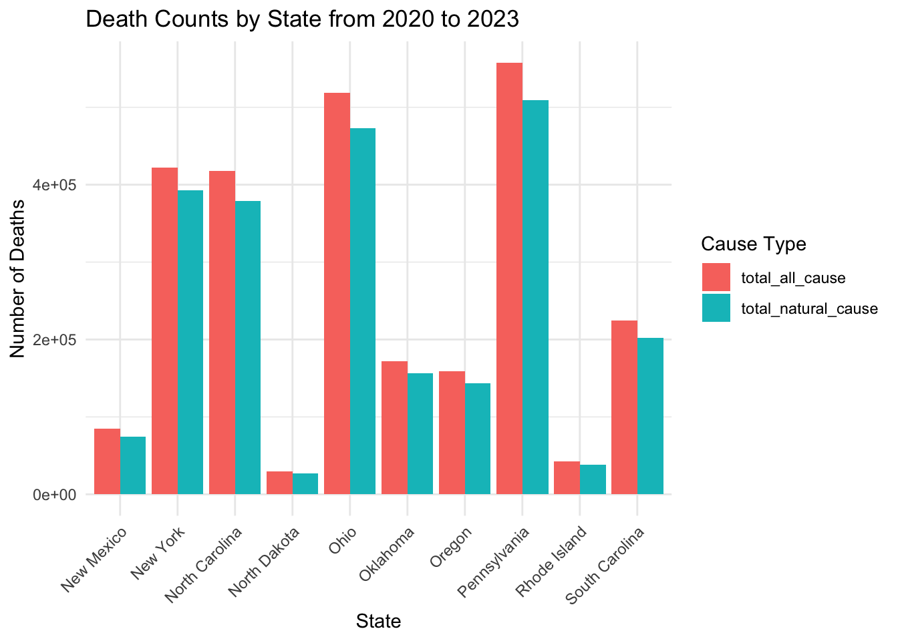
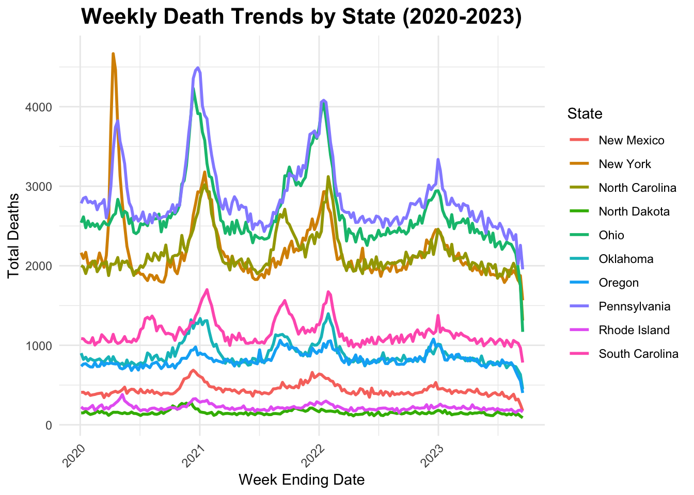
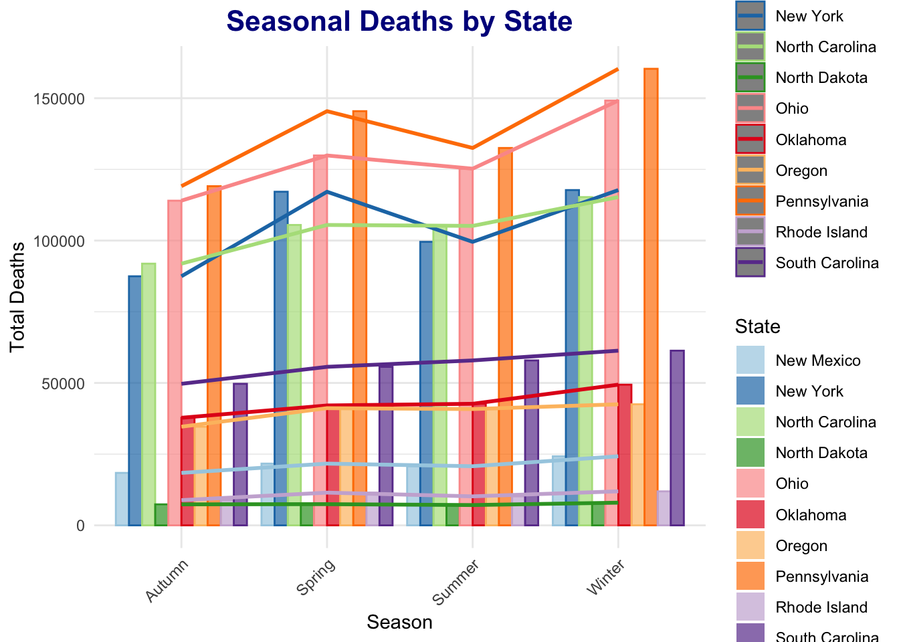
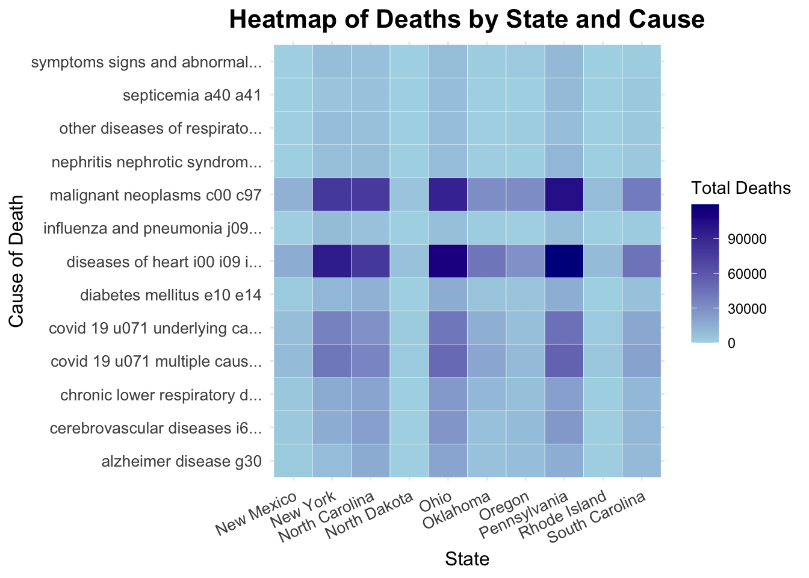

# Load necessary libraries
library(tidyverse)## ── Attaching core tidyverse packages ──────────────────────── tidyverse 2.0.0 ──
## ✔ dplyr 1.1.4 ✔ readr 2.1.5
## ✔ forcats 1.0.0 ✔ stringr 1.5.1
## ✔ ggplot2 3.5.1 ✔ tibble 3.2.1
## ✔ lubridate 1.9.3 ✔ tidyr 1.3.1
## ✔ purrr 1.0.2
## ── Conflicts ────────────────────────────────────────── tidyverse_conflicts() ──
## ✖ dplyr::filter() masks stats::filter()
## ✖ dplyr::lag() masks stats::lag()
## ℹ Use the conflicted package (<http://conflicted.r-lib.org/>) to force all conflicts to become errorslibrary(janitor)##
## Attaching package: 'janitor'
##
## The following objects are masked from 'package:stats':
##
## chisq.test, fisher.testlibrary(lubridate)# Load the dataset
data <- read_csv("./data/weekly_deaths_by_state_and_causes.csv")## Warning: One or more parsing issues, call `problems()` on your data frame for details,
## e.g.:
## dat <- vroom(...)
## problems(dat)## Rows: 10476 Columns: 35
## ── Column specification ────────────────────────────────────────────────────────
## Delimiter: ","
## chr (14): Data As Of, Jurisdiction of Occurrence, flag_sept, flag_diab, fla...
## dbl (17): MMWR Year, MMWR Week, All Cause, Natural Cause, Septicemia (A40-A...
## lgl (3): flag_allcause, flag_natcause, flag_neopl
## date (1): Week Ending Date
##
## ℹ Use `spec()` to retrieve the full column specification for this data.
## ℹ Specify the column types or set `show_col_types = FALSE` to quiet this message.# Convert variable names to snake_case
cleaned_data <- data %>%
clean_names()
# Rename the column 'jurisdiction_of_occurrence' to 'state'
cleaned_data <- cleaned_data %>%
rename(state = jurisdiction_of_occurrence)
# Filter for relevant states
states_of_interest <- c("New Mexico", "New York", "North Carolina", "North Dakota",
"Ohio", "Oklahoma", "Oregon", "Pennsylvania", "Rhode Island", "South Carolina")
filtered_data <- cleaned_data %>%
filter(state %in% states_of_interest)
# Check for missing data
missing_summary <- filtered_data %>%
summarize(across(everything(), ~ sum(is.na(.))))
# Convert to data frame and display
as.data.frame(missing_summary)## data_as_of state mmwr_year mmwr_week week_ending_date all_cause natural_cause
## 1 0 0 0 0 0 0 0
## septicemia_a40_a41 malignant_neoplasms_c00_c97 diabetes_mellitus_e10_e14
## 1 864 0 383
## alzheimer_disease_g30 influenza_and_pneumonia_j09_j18
## 1 294 825
## chronic_lower_respiratory_diseases_j40_j47
## 1 302
## other_diseases_of_respiratory_system_j00_j06_j30_j39_j67_j70_j98
## 1 736
## nephritis_nephrotic_syndrome_and_nephrosis_n00_n07_n17_n19_n25_n27
## 1 777
## symptoms_signs_and_abnormal_clinical_and_laboratory_findings_not_elsewhere_classified_r00_r99
## 1 779
## diseases_of_heart_i00_i09_i11_i13_i20_i51 cerebrovascular_diseases_i60_i69
## 1 0 287
## covid_19_u071_multiple_cause_of_death covid_19_u071_underlying_cause_of_death
## 1 260 365
## flag_allcause flag_natcause flag_sept flag_neopl flag_diab flag_alz
## 1 1940 1940 1076 1940 1557 1646
## flag_inflpn flag_clrd flag_otherresp flag_nephr flag_otherunk flag_hd
## 1 1115 1638 1204 1163 1161 1940
## flag_stroke flag_cov19mcod flag_cov19ucod
## 1 1653 1680 1575# Remove duplicate rows
filtered_data <- filtered_data %>%
distinct()
# Check cleaned and filtered data
print(glimpse(filtered_data))## Rows: 1,940
## Columns: 35
## $ data_as_of <chr> …
## $ state <chr> …
## $ mmwr_year <dbl> …
## $ mmwr_week <dbl> …
## $ week_ending_date <date> …
## $ all_cause <dbl> …
## $ natural_cause <dbl> …
## $ septicemia_a40_a41 <dbl> …
## $ malignant_neoplasms_c00_c97 <dbl> …
## $ diabetes_mellitus_e10_e14 <dbl> …
## $ alzheimer_disease_g30 <dbl> …
## $ influenza_and_pneumonia_j09_j18 <dbl> …
## $ chronic_lower_respiratory_diseases_j40_j47 <dbl> …
## $ other_diseases_of_respiratory_system_j00_j06_j30_j39_j67_j70_j98 <dbl> …
## $ nephritis_nephrotic_syndrome_and_nephrosis_n00_n07_n17_n19_n25_n27 <dbl> …
## $ symptoms_signs_and_abnormal_clinical_and_laboratory_findings_not_elsewhere_classified_r00_r99 <dbl> …
## $ diseases_of_heart_i00_i09_i11_i13_i20_i51 <dbl> …
## $ cerebrovascular_diseases_i60_i69 <dbl> …
## $ covid_19_u071_multiple_cause_of_death <dbl> …
## $ covid_19_u071_underlying_cause_of_death <dbl> …
## $ flag_allcause <lgl> …
## $ flag_natcause <lgl> …
## $ flag_sept <chr> …
## $ flag_neopl <lgl> …
## $ flag_diab <chr> …
## $ flag_alz <chr> …
## $ flag_inflpn <chr> …
## $ flag_clrd <chr> …
## $ flag_otherresp <chr> …
## $ flag_nephr <chr> …
## $ flag_otherunk <chr> …
## $ flag_hd <chr> …
## $ flag_stroke <chr> …
## $ flag_cov19mcod <chr> …
## $ flag_cov19ucod <chr> …
## # A tibble: 1,940 × 35
## data_as_of state mmwr_year mmwr_week week_ending_date all_cause natural_cause
## <chr> <chr> <dbl> <dbl> <date> <dbl> <dbl>
## 1 09/27/2023 New … 2020 1 2020-01-04 408 358
## 2 09/27/2023 New … 2020 2 2020-01-11 410 365
## 3 09/27/2023 New … 2020 3 2020-01-18 388 337
## 4 09/27/2023 New … 2020 4 2020-01-25 404 367
## 5 09/27/2023 New … 2020 5 2020-02-01 370 322
## 6 09/27/2023 New … 2020 6 2020-02-08 377 315
## 7 09/27/2023 New … 2020 7 2020-02-15 382 337
## 8 09/27/2023 New … 2020 8 2020-02-22 391 338
## 9 09/27/2023 New … 2020 9 2020-02-29 396 355
## 10 09/27/2023 New … 2020 10 2020-03-07 400 358
## # ℹ 1,930 more rows
## # ℹ 28 more variables: septicemia_a40_a41 <dbl>,
## # malignant_neoplasms_c00_c97 <dbl>, diabetes_mellitus_e10_e14 <dbl>,
## # alzheimer_disease_g30 <dbl>, influenza_and_pneumonia_j09_j18 <dbl>,
## # chronic_lower_respiratory_diseases_j40_j47 <dbl>,
## # other_diseases_of_respiratory_system_j00_j06_j30_j39_j67_j70_j98 <dbl>,
## # nephritis_nephrotic_syndrome_and_nephrosis_n00_n07_n17_n19_n25_n27 <dbl>, …# Data cleaning and aggregation
barplot_data <- filtered_data %>%
select(state, all_cause, natural_cause) %>% # Select relevant columns
group_by(state) %>% # Group by jurisdiction
summarise(
total_all_cause = sum(all_cause, na.rm = TRUE),
total_natural_cause = sum(natural_cause, na.rm = TRUE)
) %>%
pivot_longer(
cols = c(total_all_cause, total_natural_cause),
names_to = "cause_type",
values_to = "count"
)
# Create the plot
ggplot(barplot_data, aes(x = state, y = count, fill = cause_type)) +
geom_bar(stat = "identity", position = position_dodge(width = 0.9)) +
labs(
title = "Death Counts by State from 2020 to 2023",
x = "State",
y = "Number of Deaths",
fill = "Cause Type"
) +
theme_minimal() +
theme(axis.text.x = element_text(angle = 45, hjust = 1)) # Rotate x-axis labels for better readability
# Summarize deaths by week for each state
weekly_trends <- filtered_data %>%
group_by(state, week_ending_date) %>%
summarise(total_deaths = sum(all_cause, na.rm = TRUE), .groups = "drop")
# Plot trends over time
ggplot(weekly_trends, aes(x = week_ending_date, y = total_deaths, color = state)) +
geom_line(size = 1) +
labs(
title = "Weekly Death Trends by State (2020-2023)",
x = "Week Ending Date",
y = "Total Deaths",
color = "State"
) +
theme_minimal() +
theme(
plot.title = element_text(hjust = 0.5, face = "bold", size = 16),
axis.text.x = element_text(angle = 45, hjust = 1)
)## Warning: Using `size` aesthetic for lines was deprecated in ggplot2 3.4.0.
## ℹ Please use `linewidth` instead.
## This warning is displayed once every 8 hours.
## Call `lifecycle::last_lifecycle_warnings()` to see where this warning was
## generated.
# Add a season column based on week ending date
filtered_data <- filtered_data %>%
mutate(
season = case_when(
month(week_ending_date) %in% c(12, 1, 2) ~ "Winter",
month(week_ending_date) %in% c(3, 4, 5) ~ "Spring",
month(week_ending_date) %in% c(6, 7, 8) ~ "Summer",
month(week_ending_date) %in% c(9, 10, 11) ~ "Autumn"
)
)
# Summarize deaths by season and state
season_summary <- filtered_data %>%
group_by(state, season) %>%
summarise(total_deaths = sum(all_cause, na.rm = TRUE), .groups = "drop")
# Plot seasonal deaths by state
ggplot(season_summary, aes(x = season, y = total_deaths, group = state, color = state)) +
geom_bar(stat = "identity", aes(fill = state), position = "dodge", alpha = 0.7) + # Add bar plot
geom_line(aes(group = state), size = 1) + # Add line plot
labs(
title = "Seasonal Deaths by State",
x = "Season",
y = "Total Deaths",
fill = "State"
) +
scale_fill_brewer(palette = "Paired") + # Change bar plot color palette
scale_color_brewer(palette = "Paired") + # Match line colors with bar colors
theme_minimal() +
theme(
plot.title = element_text(hjust = 0.5, size = 16, face = "bold", color = "darkblue"), # Center and style title
axis.text.x = element_text(angle = 45, hjust = 1) # Rotate x-axis labels for readability
)
# Aggregate data for heatmap
heatmap_data <- filtered_data %>%
select(state, septicemia_a40_a41:covid_19_u071_underlying_cause_of_death) %>%
pivot_longer(
cols = -state,
names_to = "cause_of_death",
values_to = "death_count"
) %>%
group_by(state, cause_of_death) %>%
summarise(total_deaths = sum(death_count, na.rm = TRUE), .groups = "drop") %>%
mutate(
cause_of_death = str_replace_all(cause_of_death, "_", " "), # Replace underscores with spaces
cause_of_death = str_trunc(cause_of_death, 30) # Truncate long names to 30 characters
)
# Create heatmap
ggplot(heatmap_data, aes(x = state, y = cause_of_death, fill = total_deaths)) +
geom_tile(color = "white") +
scale_fill_gradient(low = "lightblue", high = "darkblue") +
labs(
title = "Heatmap of Deaths by State and Cause",
x = "State",
y = "Cause of Death",
fill = "Total Deaths"
) +
theme_minimal() +
theme(
axis.text.x = element_text(angle = 25, hjust = 1, size = 10), # Rotate and resize x-axis labels
axis.text.y = element_text(size = 10), # Adjust y-axis label size
plot.title = element_text(hjust = 0.5, face = "bold", size = 16), # Center and bold the title
axis.title.x = element_text(size = 12), # Adjust x-axis title size
axis.title.y = element_text(size = 12) # Adjust y-axis title size
)